Done. All fixes are applied, the site builds with zero errors, and every screenshot below is taken from the running site. Each pair shows the page before the fix (left / top) and after (right / bottom).
What was fixed
1 · Admin panel colors didn't match the site theme
The admin area still used leftovers from an old blue theme: a cyan highlight on the selected menu item, purple/cyan background glows, and a blue-tinted sidebar. Everything now uses the site's crimson & gold theme.
2 · Requisition pages used colors that aren't part of the design
Vote counts, bars and buttons used bright mint/rose colors from a different design system. They now use the site's own green and red so all pages look consistent.
3 · Wide tables could get cut off on phones
Six pages had tables without the site's horizontal-scroll container (Shipping policy, Manifesto, Membership invoice, admin Card import, admin Products, admin Product categories). Wide tables are now contained and scroll sideways instead of being unreachable.
4 · Notification dropdown could overflow small phones
The notifications popup was a fixed 360px wide — wider than small phone screens. It now shrinks to fit any screen.
5 · Pop-up confirm dialogs had an off-theme cyan button
The “Are you sure?” dialog (used for deletes etc.) still had a bright cyan confirm button and bluish background from the old theme. It now matches the crimson/gold design.
6 · Broken red accents on several pages
Some buttons and accents (e.g. “Clear cart”) were supposed to be red but the CSS variable they referenced was never defined, so they rendered in the default text color. The missing variables are now defined and all 28 usages render correctly.
7 · Deformed pills and stretched buttons in mobile tables
In narrow table cells the status pills (“2 (100%)”) wrapped onto two lines into tall distorted circles, and the row’s action buttons stretched into giant boxes. Pills now always stay on one line and buttons keep their normal shape on every table.
8 · Admin tables had no styling at all
Three admin pages (Requisition requests, Products, Product categories) used a table style that was never defined in the site’s CSS, so they rendered with browser-default spacing: column headings collided (“Total Status Created”), chips touched dates, and rows had no rhythm. They now use the site’s standard table component: clear column separation, single-line headings, comfortable padding, and tidy action buttons. Table buttons also never wrap onto two lines anymore, site-wide.
9 · Cyan glows on buttons and a broken light alert box
Primary buttons (Save, New card set, etc.) cast a cyan glow — a leftover from the old blue theme that clashed with the red/gold buttons. 27 of these old-color values were still hard-coded across the stylesheet (button glows, focus rings, badges, text selection, dropdown arrow). All now use the theme red. The “Security Note” alert on System Settings rendered as a light blue box from Bootstrap’s defaults; alerts are now dark panels with theme-colored borders (red for info, gold for warning, green for success, red for danger).
Fix 1 — Admin panel theme (before → after)
Before — old blue highlight
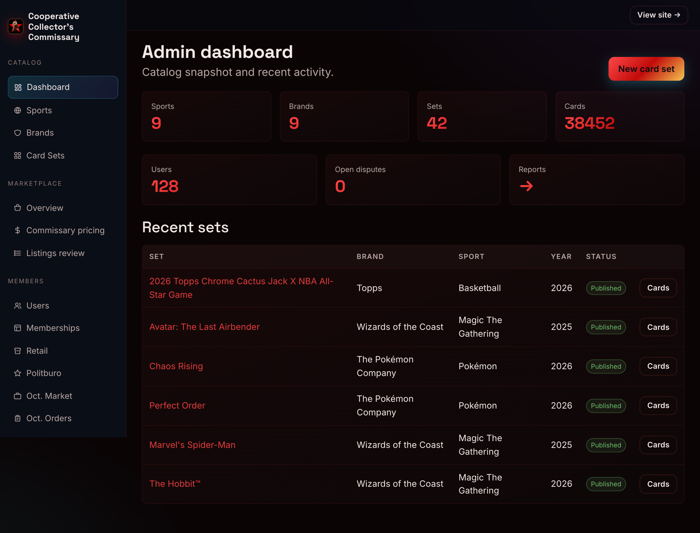
Selected menu item highlighted in cyan/blue, cool purple-blue glow in the background — leftovers of the old theme.
After — theme colors
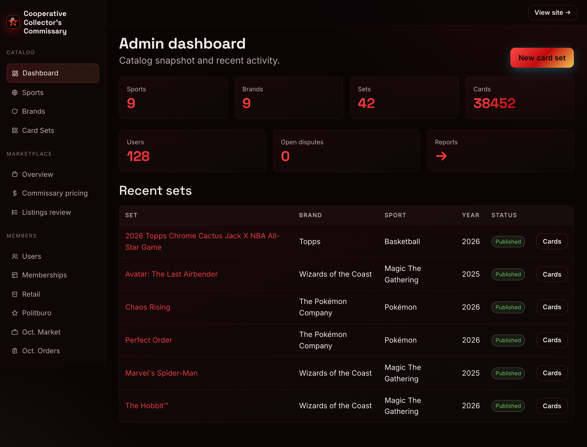
Selected menu item now uses the site's crimson & gold; the background glow matches the theme.
Fix 2 — Requisition page colors (before → after)
Before — off-palette colors
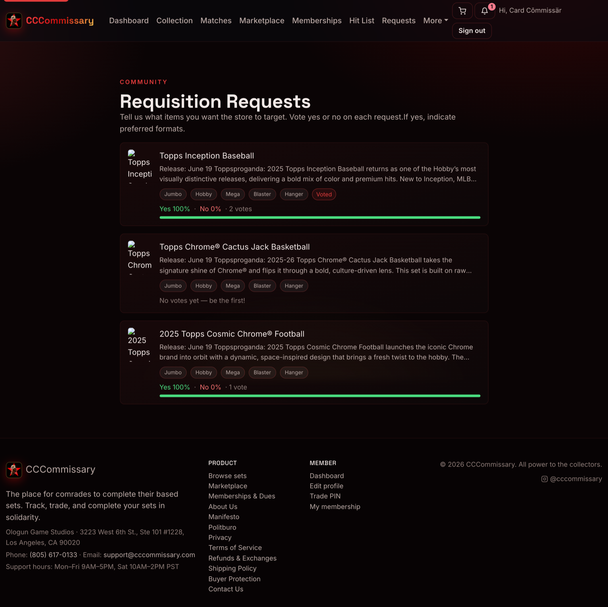
Vote bars and Yes/No percentages in bright mint/rose — colors that exist nowhere else in the design.
After — site palette
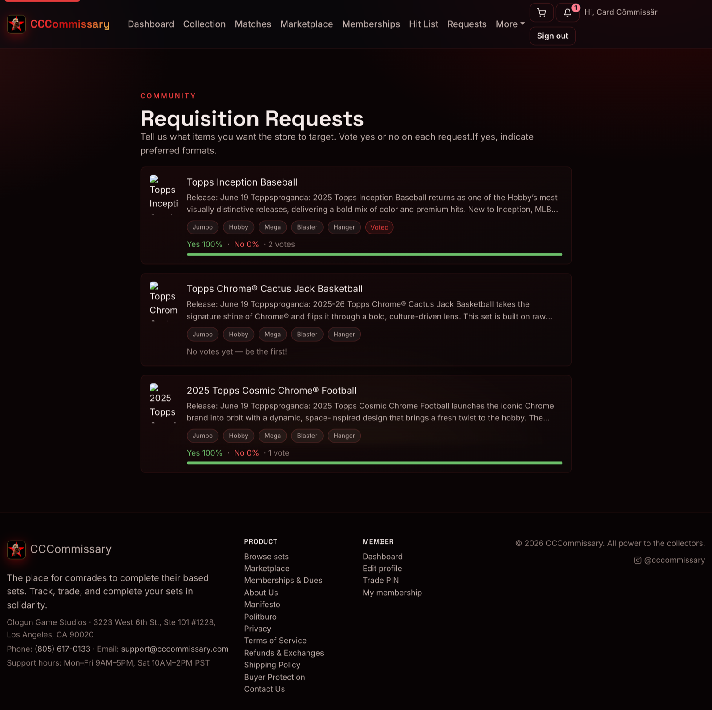
The vote green changed from bright mint to the site's own softer green, and the red from light rose to the site's red — same role, now matching every other page. The change is subtle by design; the dashboard pair above shows the stronger visual change.
Fix 3 — Wide tables on phones (before → after)
Before — table breaks the page
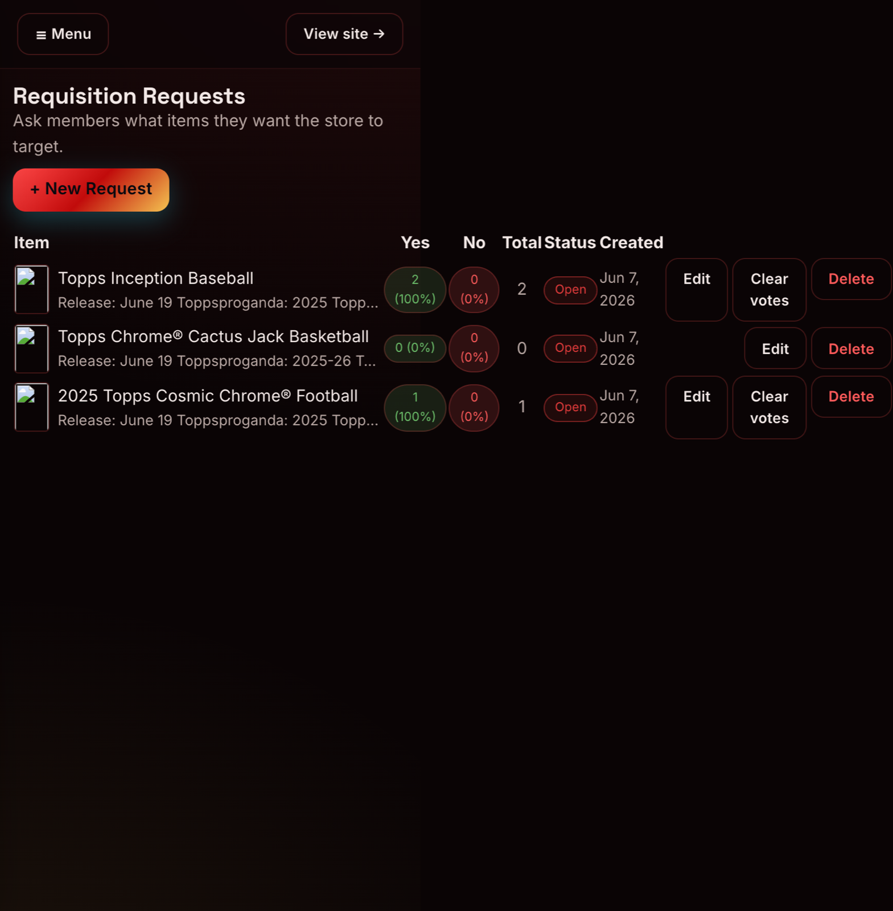
A wide admin table (816px) on a phone screen (390px): the table pushes past the screen edge and the cut-off columns cannot be reached. The six fixed pages had exactly this behavior.
After — clean and contained
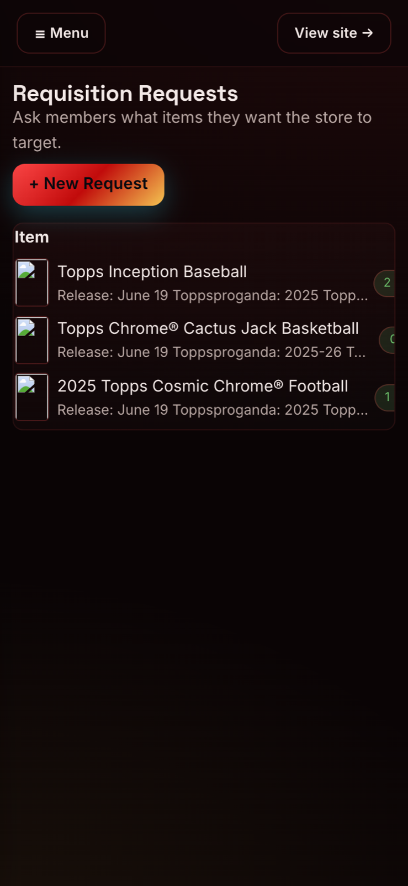
Now the table lives inside a card that fits the screen: item names, photos and rows render normally, and the pill peeking at the right edge shows there is more to scroll to.
After — scrolled sideways
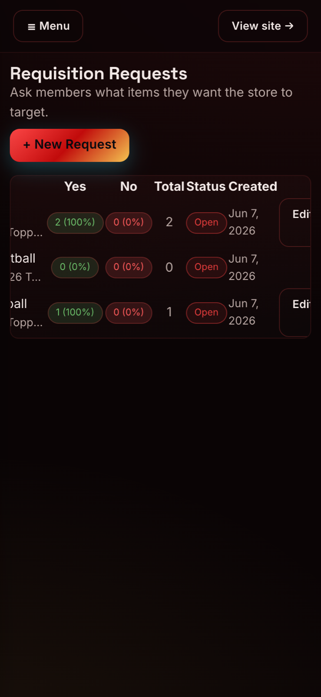
Swiping sideways slides the columns inside the card, so nothing is unreachable. Notice the status pills stay on one line and the action buttons keep their normal size — this is fix 7 in action too.
Fix 8 — Admin tables had no styling (before → after)
Before — unstyled, headings collide
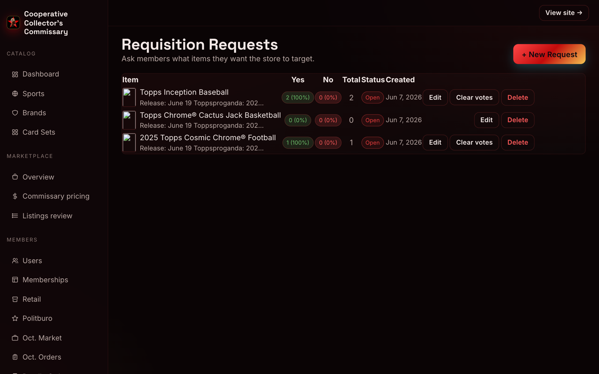
Admin → Requisition requests: column headings collide into “TotalStatus Created”, the Open chip touches the date, and rows have no spacing rhythm — this table’s style was never defined in the site’s CSS.
After — standard table component
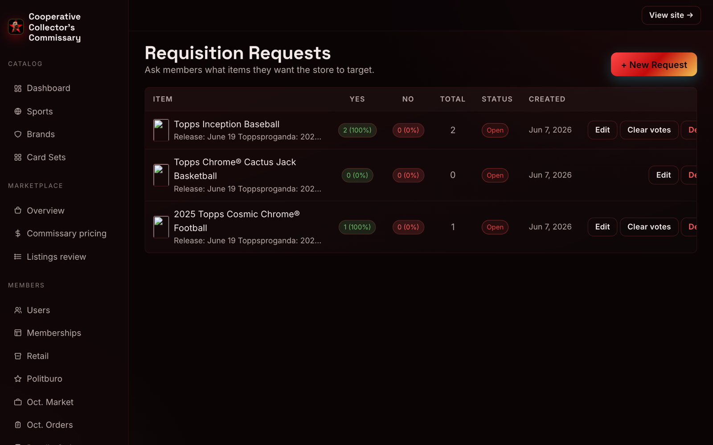
Same page now using the site’s standard table component: clear column separation (Item · Yes · No · Total · Status · Created), single-line headings, dates on one line, and tidy, evenly spaced action buttons. Applies to all three affected admin pages and every table site-wide.
System Settings: the Save button glowed cyan (old theme leftover) and the Security Note rendered as a light blue Bootstrap box that broke the dark design.
After — theme-consistent glow & dark alert
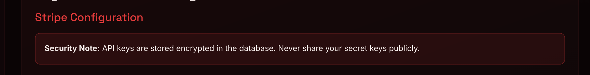
Buttons now glow in their own red/gold, and the Security Note is a dark panel with a subtle red border — readable and on-theme.
Before — cyan halo on Card Sets button
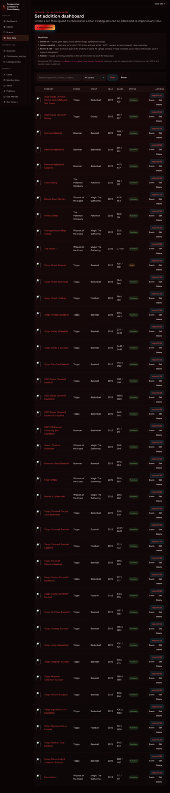
Admin → Card Sets: the “New card set” button with a cyan halo around it.
After — matching red halo
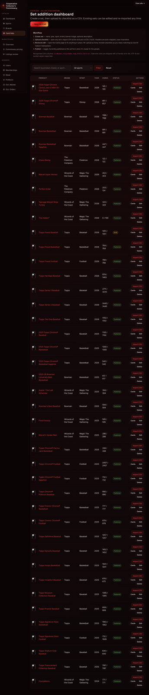
The same button now glows in the button’s own color, as the design intends. 27 old-color values were replaced across the stylesheet — button glows, focus rings, badges, text selection, dropdown arrows.
Also included
Notification popup now shrinks to fit small screens (was fixed 360px wide).
Confirm dialogs (delete “Are you sure?” pop-ups) recolored from old-theme cyan to the site theme.
The previously-broken red accents (28 places, e.g. “Clear cart”) now render in the intended red.